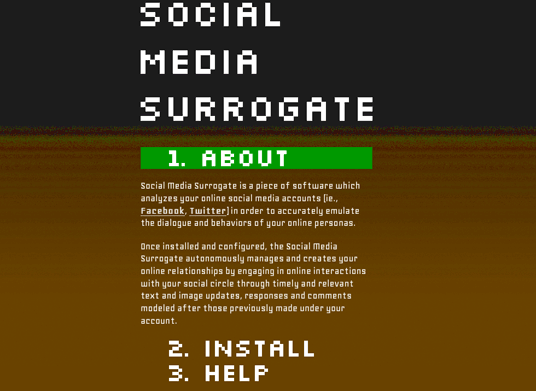

Social Media Surrogate (2010)
click to expand

Social Media Surrogate is conceptual software which analyzes a user‘s previous online activity on a social network (such as Facebook or Twitter) to create a data model representative that person’s online behavior, interactions and communication style. After analysis, a script uses this data model to autonomously generate social media content and continuously evolve and adapt itself based upon the user‘s listed interests, current events (such as news feeds and friend’s activity), and the user‘s friends’ interests.
Once automation has begun, the actual account owner is blocked from all online services and allows the Social Media Surrogate to control their online persona indefinitely.